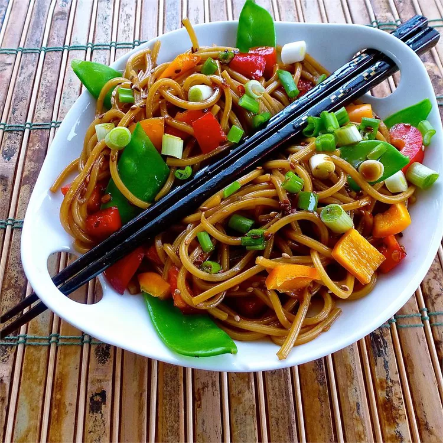

Asian Pasta Salad

A cool pasta salad perfect for the upcoming summer heat!
- 1 (8 ounce) package spaghetti
- 1 teaspoon olive oil
- 6 tablespoons soy sauce
- ¼ cup white sugar
- 3 tablespoons rice vinegar
- 1 tablespoon toasted sesame seeds
- 2 teaspoons sweet chili sauce
- 1 teaspoon sesame oil
- 2 green onions, chopped
- 1 red bell pepper, chopped (Optional)
- 1 cup sugar snap peas (Optional)
- Bring a large pot of lightly salted water to a boil. Cook spaghetti in the boiling water, stirring occasionally until cooked through but firm to the bite, 10 to 12 minutes. Drain and rinse under cold water. Transfer pasta to a serving bowl and toss with olive oil.
- Whisk soy sauce, sugar, vinegar, sesame seeds, chili sauce, and sesame oil together in a bowl until sugar dissolves. Toss soy sauce mixture with pasta; top with green onions, red bell pepper, and snap peas. Refrigerate 30 minutes to overnight to allow flavors to blend. Toss again before serving.